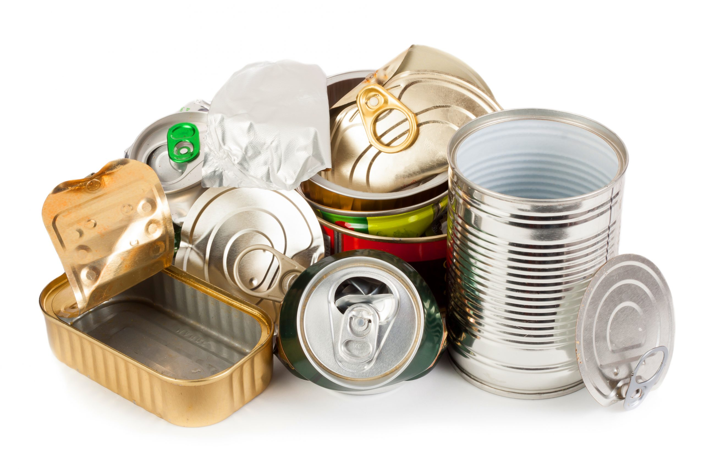

Descarte correto de residuos
Descarte e reciclagem de Metal
Reciclagem do Metal
A reciclagem do metal evita a retirada de minérios do solo, minimizando o impacto ambiental acarretado pela atividade mineradora, além de reduzir em muito o volume de água e energia necessárias para a produção de novos artigos. Esse princípio vale para todos os tipos de metal, entretanto há maior interesse reciclador na indústria produtora de embalagens de alumínio, o que determina aumento no valor de venda deste material. Por esse motivo, o Brasil é atualmente um dos campeões mundiais na reciclagem de alumínio, recolhido na sua maior parte por catadores autônomos, que reviram os sacos de lixo da população em busca do material para revenda.
A importância da reciclagem do Metal
- Economiza recursos naturais, como minério de ferro e bauxita.
- Reduz a energia necessária para a produção em comparação com o metal virgem.
- Ajuda a proteger recursos hídricos, já que a mineração e o refino de metais frequentemente resultam em contaminação de águas superficiais e subterrâneas.
- Reduz a necessidade de extração de recursos em áreas sensíveis, como florestas tropicais e habitats de vida selvagem.
- Minimiza os impactos negativos da mineração, como a degradação do solo e a perda de biodiversidade.
Como descartar Metais corretamente
Os metais, como alumínio e aço,devem ser separados de outros materiais. Certifique-se de que estejam limpos e livres de contaminantes. Latas de alimentos, recipientes de metal e até mesmo objetos domésticos, como panelas e utensílios de cozinha, podem ser reciclados. Verifique se não há outros materiais presos ao metal, como plástico ou papel alumínio. Coloque o metal reciclável em contentores de reciclagem apropriados ou leve-o para centros de reciclagem.